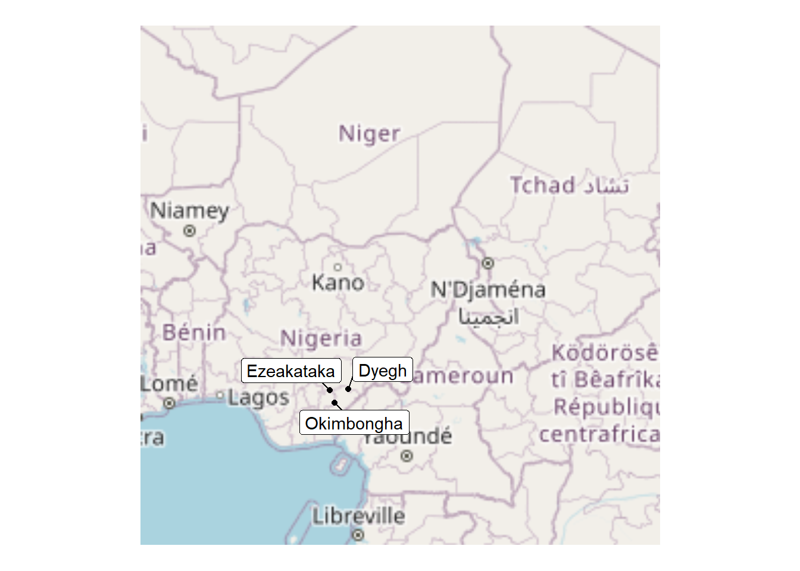

SCAPES: Human movement study
Introduction
Aims
- Describe pattern of space use in three rural communities in Nigeria.
- Estimate locations of hazard through space-sharing with potentially infected rodents. Validation through serology?
- Explore heterogeneity in cumulative hazard across age, occupation, sex and socio-economic strata.
Methods
Study site selection
Focal villages (one village from each state) have previously been identified as part of the SCAPES programme. Focal villages represent an archetypal village structure and size for each of Benue, Cross River and Ebonyi states in Southern Nigeria. Two neighbouring villages for each of the focal villages have been studied as part of a cross-sectional survey of the region for the SCAPES programme. Dyegh, has been identified as the focal village for Benue, it contains 305 households with an estimated 2,500 (1,830-2,821) individuals. Surveys have been completed with 210 individuals, from 64 households, representing 9% of the expected village population and 21% of the households within the village. … for remaining focal villages (Okimbongha and Ezeakataka).
Village structure
Village organisation across the three focal villages varies substantially. In Cross River, our study villages are orientated along the course of a river, which is common for the region. Buildings, and households, are concentrated along an axis perpendicular to the river flow with agricultural land surrounding the nucleus of buildings on both sides of the river. In Ebonyi, study villages are less clustered with villages comprising dispersed grouping of buildings and households, which may be organised as compounds. Surrounding and interspersed between these buildings is agricultural land that may be worked by the nearby households. The organisation of villages within Benue lies between these extremes, with buildings and households clustered around larger roads, compounds are less demarcated and fewer agricultural areas lie interspersed within the village.
The location and organisation of each focal village is shown below.
Participant selection
Purposeful selection of households to enroll in the human movement study was conducted. Households were assigned to cell within a 9x9 grid overlain to sampled households within a focal village. Households from within the village were randomly chosen from each of the cells until 70 individuals from within the households consented to participate.We aimed to enrol an equal proportion of adult males, adult females and children of both sexes. Individuals were enrolled and instructed to keep the movement tracking device on them at all times for a 14 day period. At the end of each day participants were asked to complete a diary card which indicated the time spent conducting pre-specified activities during the day. The study team visited each participant 4 times during the study period to support adherence to the study protocol and answer any questions the participant may have had.
Movement tracking
iGotU devices were programmed to poll for GPS locations at 90 second intervals without interruption for a 14 day period from when the participant enrolled in the study. Each device is able to store X records and has a battery life of Y days, neither of these are expected to impact data completeness. Devices were recharged and data were offloaded between each participant. If required the study team could charge devices on behalf of participants, the participants were asked to monitor for low battery on a daily basis.
Accuracy of location was recorded for each GPS observation using HDOP and number of visible satellites. This measure of accuracy was used to impute the possible locations of a device at each timepoint with an associated confidence of location. For each participant we converted these point and time locations to a continuous space use raster where the amount of time spent in each cell was recorded (what cell size would be reasonable given accuracy of devices).